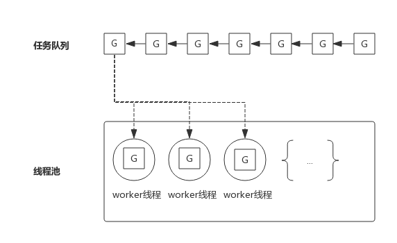
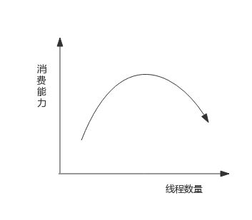
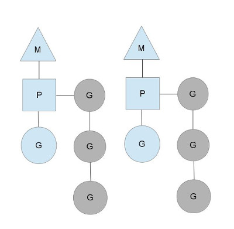
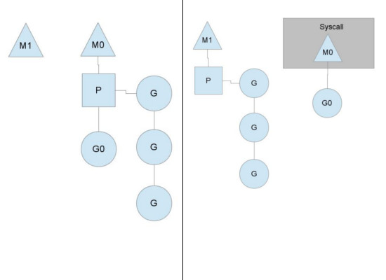

前言
Goroutine调度是一个很复杂的机制，尽管Go源码中提供了大量的注释，但对其原理没有一个好的理解的情况下去读源码收获不会很大。下面尝试用简单的语言描述一下Goroutine调度机制，在此基础上再去研读源码效果可能更好一些。
1. 线程池的缺陷
我们知道，在高并发应用中频繁创建线程会造成不必要的开销，所以有了线程池。线程池中预先保存一定数量的线程，而新任务将不再以创建线程的方式去执行，而是将任务发布到任务队列，线程池中的线程不断的从任务队列中取出任务并执行，可以有效的减少线程创建和销毁所带来的开销。
下图展示一个典型的线程池：

为了方便下面的叙述，我们把任务队列中的每一个任务称作G，而G往往代表一个函数。 线程池中的worker线程不断的从任务队列中取出任务并执行。而worker线程的调度则交给操作系统进行调度。
如果worker线程执行的G任务中发生系统调用，则操作系统会将该线程置为阻塞状态，也意味着该线程在怠工，也意味着消费任务队列的worker线程变少了，也就是说线程池消费任务队列的能力变弱了。
如果任务队列中的大部分任务都会进行系统调用，则会让这种状态恶化，大部分worker线程进入阻塞状态，从而任务队列中的任务产生堆积。
解决这个问题的一个思路就是重新审视线程池中线程的数量，增加线程池中线程数量可以一定程度上提高消费能力，但随着线程数量增多，由于过多线程争抢CPU，消费能力会有上限，甚至出现消费能力下降。 如下图所示：

2. Goroutine调度器
线程数过多，意味着操作系统会不断的切换线程，频繁的上下文切换就成了性能瓶颈。 Go提供一种机制，可以在线程中自己实现调度，上下文切换更轻量，从而达到了线程数少，而并发数并不少的效果。而线程中调度的就是Goroutine.
早期Go版本，比如1.9.2版本的源码注释中有关于调度器的解释。 Goroutine 调度器的工作就是把“ready-to-run”的goroutine分发到线程中。
Goroutine主要概念如下：
- G（Goroutine）: 即Go协程，每个go关键字都会创建一个协程。
- M（Machine）： 工作线程，在Go中称为Machine。
- P(Processor): 处理器（Go中定义的一个摡念，不是指CPU），包含运行Go代码的必要资源，也有调度goroutine的能力。
M必须拥有P才可以执行G中的代码，P含有一个包含多个G的队列，P可以调度G交由M执行。其关系如下图所示：

图中M是交给操作系统调度的线程，M持有一个P，P将G调度进M中执行。P同时还维护着一个包含G的队列（图中灰色部分），可以按照一定的策略将G调度到M中执行。
P的个数在程序启动时决定，默认情况下等同于CPU的核数，由于M必须持有一个P才可以运行Go代码，所以同时运行的M个数，也即线程数一般等同于CPU的个数，以达到尽可能的使用CPU而又不至于产生过多的线程切换开销。
程序中可以使用runtime.GOMAXPROCS()设置P的个数，在某些IO密集型的场景下可以在一定程度上提高性能。这个后面再详细介绍。
3. Goroutine调度策略
3.1 队列轮转
上图中可见每个P维护着一个包含G的队列，不考虑G进入系统调用或IO操作的情况下，P周期性的将G调度到M中执行，执行一小段时间，将上下文保存下来，然后将G放到队列尾部，然后从队列中重新取出一个G进行调度。
除了每个P维护的G队列以外，还有一个全局的队列，每个P会周期性地查看全局队列中是否有G待运行并将其调度到M中执行，全局队列中G的来源，主要有从系统调用中恢复的G。之所以P会周期性地查看全局队列，也是为了防止全局队列中的G被饿死。
3.2 系统调用
上面说到P的个数默认等于CPU核数，每个M必须持有一个P才可以执行G，一般情况下M的个数会略大于P的个数，这多出来的M将会在G产生系统调用时发挥作用。类似线程池，Go也提供一个M的池子，需要时从池子中获取，用完放回池子，不够用时就再创建一个。
当M运行的某个G产生系统调用时，如下图所示：

如图所示，当G0即将进入系统调用时，M0将释放P，进而某个空闲的M1获取P，继续执行P队列中剩下的G。而M0由于陷入系统调用而进被阻塞，M1接替M0的工作，只要P不空闲，就可以保证充分利用CPU。
M1的来源有可能是M的缓存池，也可能是新建的。当G0系统调用结束后，跟据M0是否能获取到P，将会将G0做不同的处理：
- 如果有空闲的P，则获取一个P，继续执行G0。
- 如果没有空闲的P，则将G0放入全局队列，等待被其他的P调度。然后M0将进入缓存池睡眠。
3.3 工作量窃取
多个P中维护的G队列有可能是不均衡的，比如下图：

竖线左侧中右边的P已经将G全部执行完，然后去查询全局队列，全局队列中也没有G，而另一个M中除了正在运行的G外，队列中还有3个G待运行。此时，空闲的P会将其他P中的G偷取一部分过来，一般每次偷取一半。偷取完如右图所示。
4. GOMAXPROCS设置对性能的影响
一般来讲，程序运行时就将GOMAXPROCS大小设置为CPU核数，可让Go程序充分利用CPU。 在某些IO密集型的应用里，这个值可能并不意味着性能最好。 理论上当某个Goroutine进入系统调用时，会有一个新的M被启用或创建，继续占满CPU。 但由于Go调度器检测到M被阻塞是有一定延迟的，也即旧的M被阻塞和新的M得到运行之间是有一定间隔的，所以在IO密集型应用中不妨把GOMAXPROCS设置的大一些，或许会有好的效果。